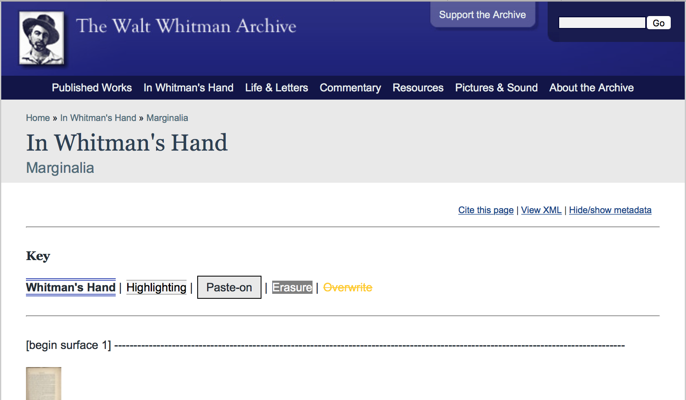

Marginal annotations in books. Interpretation, encoding, publication
☰
Index
- Front matter↡(2)
- Schopenhauer's library↡(2)
- Author’s marginalia↡(4)
- Classification↡(1)
- Interpretation↡(6)
- Mark-up model↡(4)
- Digital publication↡(4)
- Impressum

Das Schopenhauer-Archiv zwischen 1965-1992 © 2006 Universitätsbibliothek Frankfurt am Main

Hübscher, A. (ed.), Der handschriftliche Nachlaß. Randschriften zu Büchern, V, F/M: Waldemar Kramer, 1968
- 3000 books
- German literature: 135
- French: 101
- English: 73
- Italian: 66
- Spanish: 38
Reading Literature
author’s marginalia
✓ marks and annotations (marginalia) in the personal libraries of modern writers and thinkerscritical reaction
- prejudice: short, preliminary, unfinished, casual
- editorial u-topos Hulle / Mierlo, Reading Notes (Variants 2/3), 2004: 2
- reading traces left in text: author < ~ > text
- annotations & marks:
“The essential and defining character of the marginal note throughout its history is that it is a responsive kind of writing permanently anchored to preexisting written words.” Jackson, Marginalia: Readers writing in Books, 2001: 81
editorial decision
"Whereas textual criticism and scholarly editing used to focus on the edited text as the edition's main goal, recent tendencies seem to be less exclusively teleological" Mierlo / Hulle (ed.), Reading Notes (Variants 2/3), Amsterdam-New York, Rodopi, 2004: 5-6.
ABO: A digital archive of early modern annotated books

Harvey’s copy of Livy’s Histories www.annotatedbooksonline.com
Melville's Marginalia Online

Melville's Marginalia Online http://melvillesmarginalia.org
In Whitman's Hand

In Whitman's Hand http://whitmanarchive.org/manuscripts/marginalia/
Formal typology 1

Oráculo Manval, y Arte de Prudencia, Ámsterdam, Juan Blaeu, 1659. Ejemplar personal de Schopenhauer con marginalia Schopenhauer-Archiv (603/56).
Formal typology 2 - ways of reading
Different interpretation's levels
· Quote

Die Welt als Wille und Vorstellung, Brockhaus, 1819.
© Universitätsbibliothek Frankfurt am Main Motto. Aus dem Oráculo manual von Gracián (Af. 20.).
· Learning process

Emmert, J. H., Las Donquixotadas mas extrañas oder die abenteuerlichen Ritterthaten des sinnreichen edlen Don Quixote von la Mancha, Tübingen : Osiander, 1826
© Universitätsbibliothek Frankfurt am Main
· Indexing

L'homme de cour, Amelot de La Houssaie, París, 1684 UT

Oráculo Manval, y Arte de Prudencia, Ámsterdam, Juan Blaeu, 1659. Ejemplar personal de Schopenhauer con marginalia Schopenhauer-Archiv (603/56).
· Psychological identification

Moratín, El Café, ó La comedia nueva (Schopenhauer–Archiv: 565).
main objectives
"attempts not simply to describe my own interpretations of Jonson's markings but, more importantly, to report every passage he marked so that other scholars can speculate for themselves and reach their own conclusions about the marks' significance" Evans, Habits of Mind: Evidence and Effects of Ben Jonson’s Reading, 1995, p. 11.
Mark-up model
XML-TEI
TEI ODD: <add>
Types of marking - marginalia added on a book
Marking's intensity - type of gloss
TEI "(analysis) indicates one or more elements containing interpretations of the element on which the @ana attribute appears." thematic classification by the editor
<teiHeader>
Marcas, en lápiz, de Arthur Schopenhauer
Marcas, en tinta, de Arthur Schopenhauer

Oráculo Manval, y Arte de Prudencia, Ámsterdam, Juan Blaeu, 1659. Ejemplar personal de Schopenhauer con marginalia Schopenhauer-Archiv (603/56).
<lb type="hyphenInWord" break="no"/><pb n="95"/>era todas sus cosas, y llevandose a si<add type="Randstreichung" subtype="triple" hand="#Schop1">y podrá <add type="Unterstreichung" hand="#Schop1" >vivirse a<lb/> solas.</add>a
yej Cumplido con esa regla, sobran las demas <seg type="maxim" xml:id="138"> <num>138</num>. <add hand="#Schop1" type="Unterstreichung"> Arte de dexar estar</add>.</seg>Drupal > TEICHI (module)

- "The TEICHI Framework is a modular tool for displaying documents encoded according to the guidelines of the Text Encoding Initiative as pages in a Drupal-based website via XSLT and CSS."
- "Limited to a subset of TEI Lite"
- "Core elements: displaying a linear transcription of the source text."
Pape, S. et alii “TEICHI and the Tools Paradox. Developing a Publishing Framework for Digital Editions”, in: Journal of the Text Encoding Initiative, 2, February 2012 http://jtei.revues.org/432
Implementation: Text Format

Implementation (index): xslt
<xsl:for-each select="//seg[@type = 'maxim' and ancestor::p//add[@type = 'Unterstreichung' or @type = 'Randstreichung']]">
Implementation: css
.marginalia-triple {display: block;padding-left: 12px;border-left: 9px double red;}